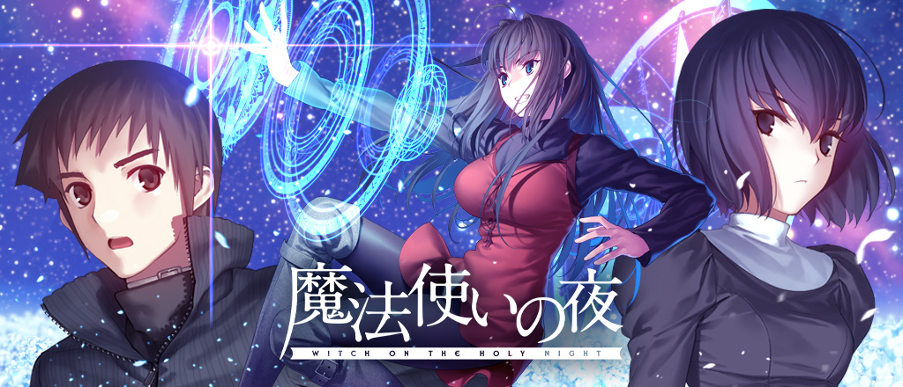

Projeto: Mahou Tsukai no Yoru

Sinopse
"Mahou Tsukai no Yoru" (Witch on the Holy Night) é uma aclamada Visual Novel da Type-Moon, escrita por Kinoko Nasu e com arte de Hirokazu Koyama. A história se passa no final dos anos 1980.
Aoko Aozaki, uma jovem aprendiz de maga, vive em uma antiga mansão com sua reclusa mentora, Alice Kuonji. A vida das duas é virada de cabeça para baixo quando um garoto quieto de sua escola, Soujuurou Shizuki, acidentalmente testemunha o uso de magia. Juntos, os três são arrastados para os mistérios sombrios e conflitos mágicos que cercam a cidade de Misaki.
Screenshots
Instruções de Instalação
Siga estes passos para aplicar a tradução (exemplo):
- Compre e instale o jogo original (Steam/Nuuvem/etc).
- Baixe nosso patch de tradução no link ao lado.
- Extraia o conteúdo do arquivo .zip na pasta raiz do jogo.
- Substitua todos os arquivos quando perguntado.
- Execute o jogo pelo executável principal. Bom jogo!
Status do Projeto
Progresso Geral
Tradução (Roteiro)
2%
Revisão
1%
QC (Controle de Qualidade)
0%